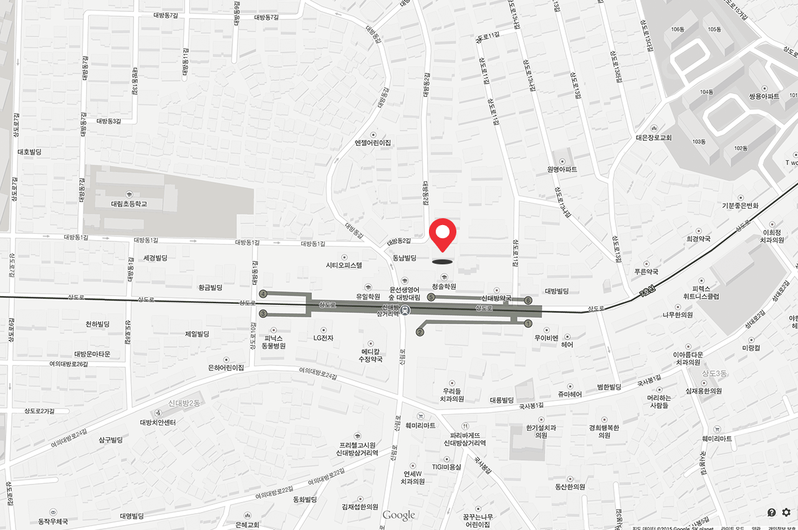
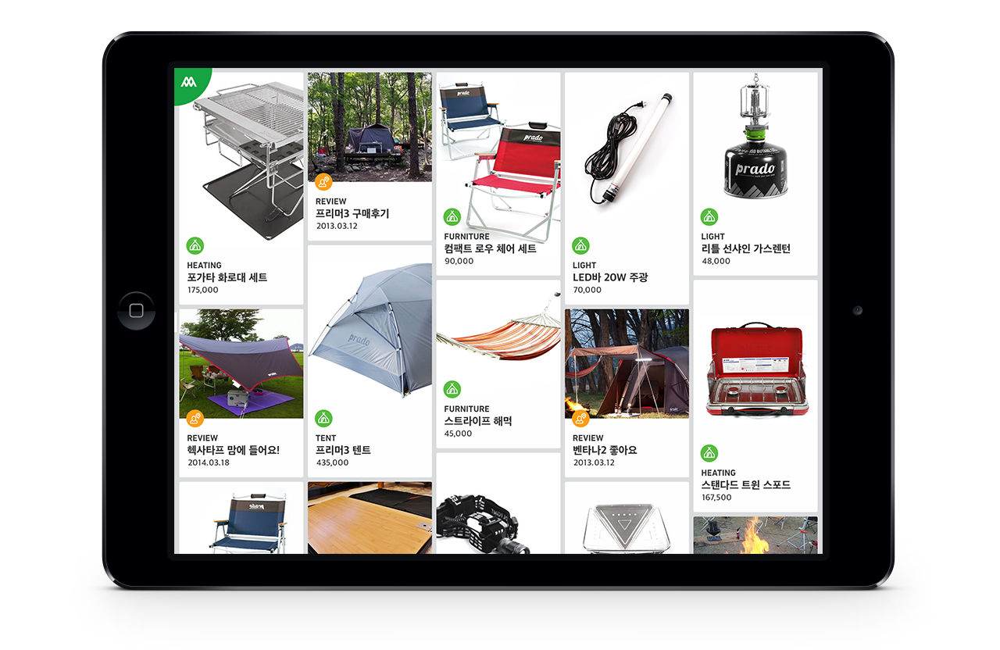
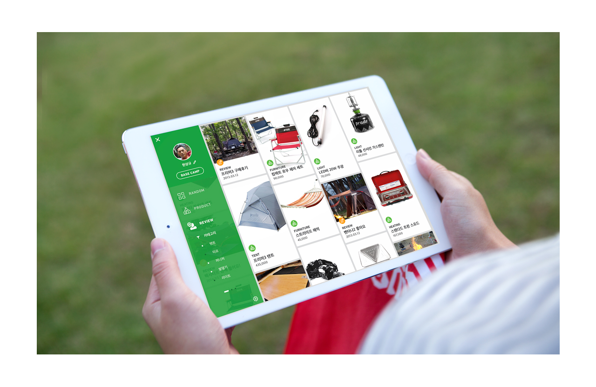
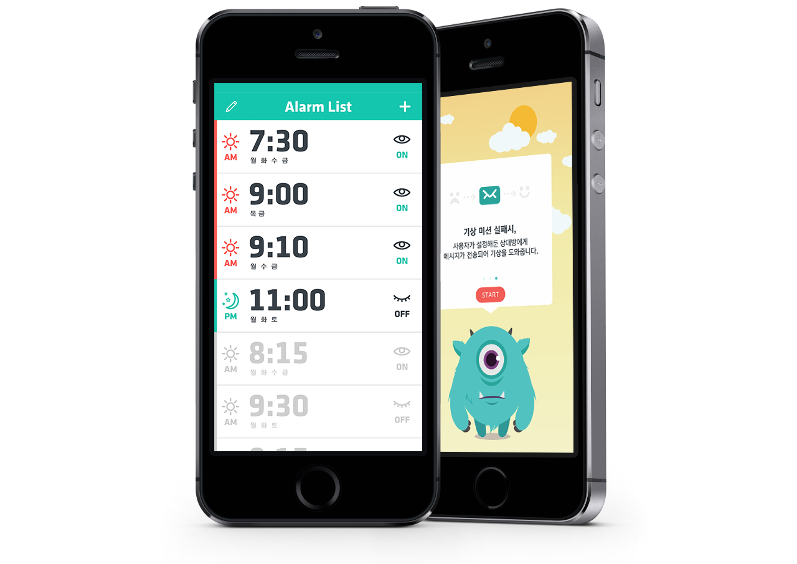

ABOUTHello, I am ahnsohee.
I design for Interface, Graphic, Infographic each field,
trying to make awesome things happen.I want having contributed something useful and attractive that didn't go away
after a few moment. Now I've written enough words to make the paragraph look good.
Alright, just some more so I have 3 rows. Yes, just like that. Have a good-time.
01
INTERFACE DESIGN
I think, talk to people, make sketches, lead discussion.
02
GRAPHIC DESIGN
I want having contributed something attractive. It will be awesome.
03
INFOGRAPHICS
I think, talk to people, make sketches, lead discussion.

Contact
+82 10 5125 5663 · ahnsohee9089@gmail.com
Myengsung 502,Dabang, Kwonak, Seoul, Korea
FOR CAMPCamping ApplicationI want having contributed something useful and attractive that didn't go away
after a few moment. Now I've written enough words to make the paragraph look good.
Alright, just some more so I have 3 rows. Yes, just like that. Have a good-time.

Passing by the rugged Socotra, we soon sighted the mountainous southern coast of Arabia, and by midday on January 20 we were focussing our binoculars on the picturesque gate of the Indian Ocean, Aden. Curious it is how Britain has secured all the great strategical points of the world—Gibraltar, Suez, Aden, Singapore, Thursday Island, the Cape of Good Hope, and the rest. And one has only to see Aden, with its rocky peaks piercing the skyline, to realize how strong it is, and how futile would be any effort to capture it. For all the defences of Aden seem to be hewn out of solid granite.

Passing by the rugged Socotra, we soon sighted the mountainous southern coast of Arabia, and by midday on January 20 we were focussing our binoculars on the picturesque gate of the Indian Ocean, Aden. Curious it is how Britain has secured all the great strategical points of the world—Gibraltar, Suez, Aden, Singapore, Thursday Island, the Cape of Good Hope, and the rest. And one has only to see Aden, with its rocky peaks piercing the skyline, to realize how strong it is, and how futile would be any effort to capture it. For all the defences of Aden seem to be hewn out of solid granite.
COWALKERAppcessory&Gui Design
I am living Egypt, living.... Your pyramids and your mosques and your old Nile can talk to me of things long past and gone, and I shall listen with interest to what they have to say, but I would rather be a living dog of an Egyptian than the dead lion of an Egyptian king—I would rather be a moving, talking native dressed in garish clothes than a Prince of the House of Rameses, sans eyes, sans ears, sans tongue, in the shrivelled brown form of a mummy.
You might also like Inspiration for Article Intro Effects
A·CROSSInformation Visualization—About ME
One could not help contrasting this large force from Australia and New Zealand—a force that was to be doubled and trebled ere long—with the little force of 500 men which William Bede Dalley, Australian Orator and Patriot, sent from New South Wales to the Sudan just thirty years before. It spoke not only of the wonderful growth in population of Britain's Dominions of the South, but it was a living proof that the years had only served to cement the bonds of love and loyalty that bind the grand old Mother land to her Oversea Dominions. The rising in India, the intention of the Australians to proclaim their independence the moment when Britain found herself in peril—where were they? Where now was the "disintegration" of the British Empire which the German Emperor and his War Lords had so confidently predicted?
You might also like Inspiration for Article Intro Effects
OYEAlram ApplicationI want having contributed something useful and attractive that didn't go away
after a few moment. Now I've written enough words to make the paragraph look good.
Alright, just some more so I have 3 rows. Yes, just like that. Have a good-time.

You had heard of the Plagues of Egypt; we have seen them, and are able to vouch for the authenticity of the Scriptures. Instead of hot cross buns, Easter brought us a plague of locusts. The entertainment started at about three o'clock in the afternoon and lasted till after sundown. Millions and billions and quadrillions of locusts danced and sang for us. The air was absolutely full of them, darkening the sun—big yellow and brown and black things, mostly about two inches long. They sounded like thousands of whirring wheels, and they dropped on the roofs with a noise like rain. Where they landed they left everything bare as a bone. All along the Nile the "gyppies" turned out and banged tin cans to drive them off. Here was an invasion, if you like! The telegraph wires were black with them—like long beads. Some of the beautiful Ma'adi gardens were quite spoilt. These locusts of Egypt have absolutely no love for the beautiful—in fact, the more beautiful a thing is the more delight do they take in devouring it.
I am living Egypt, living.... Your pyramids and your mosques and your old Nile can talk to me of things long past and gone, and I shall listen with interest to what they have to say, but I would rather be a living dog of an Egyptian than the dead lion of an Egyptian king—I would rather be a moving, talking native dressed in garish clothes than a Prince of the House of Rameses, sans eyes, sans ears, sans tongue, in the shrivelled brown form of a mummy.
You might also like Inspiration for Article Intro Effects
Ewha HospitalResearvation Service Design
You had heard of the Plagues of Egypt; we have seen them, and are able to vouch for the authenticity of the Scriptures. Instead of hot cross buns, Easter brought us a plague of locusts. The entertainment started at about three o'clock in the afternoon and lasted till after sundown. Millions and billions and quadrillions of locusts danced and sang for us. The air was absolutely full of them, darkening the sun—big yellow and brown and black things, mostly about two inches long. They sounded like thousands of whirring wheels, and they dropped on the roofs with a noise like rain. Where they landed they left everything bare as a bone. All along the Nile the "gyppies" turned out and banged tin cans to drive them off. Here was an invasion, if you like! The telegraph wires were black with them—like long beads. Some of the beautiful Ma'adi gardens were quite spoilt. These locusts of Egypt have absolutely no love for the beautiful—in fact, the more beautiful a thing is the more delight do they take in devouring it.
You might also like Inspiration for Article Intro Effects
MarketMarket Service Application For Kolon Hanulche
But even a plague of locusts does not last for ever—and Egypt does. Egypt the wonderful! Egypt the kaleidoscopic! No, gentle reader, do not waste your sympathies on us. It was tiresome work, marching, training—training for the front, which for months never seemed to get any nearer, and some of "the boys"—those of them who were "spoiling for a fight," as the saying is—used at times to kick over the traces and paint the town vermilion; but there are compensations in Egypt for all who would seek them. What did it matter that we had no hot cross buns for Easter, no hard-boiled eggs, no ling, no salmon? We had omelettes and quail on toast, and chicken and curry and strawberries (no cream) and oranges and custard and jelly and Turkish coffee and Nile fish and pancakes and fritters and iced butter and beautiful jam and marmalade—and cigars. So we managed to get "a snack," you see. And I know that I, for one, had no desire just then to swap places with any man in Australia.
You might also like Inspiration for Article Intro Effects
City ProjectJeonju Tour Guide Service Design
The casualties among the officers were tremendous—brave men who led Australia's soldiers in that awful charge! And among the bravest of them were the young officers from the Duntroon Military College that stands amid delightful country surroundings near the capital of Federated Australia that is now in the making in the Mother State of New South Wales. These young fellows fought in a way that showed their native courage and the excellence of their training. Only the year before, when Sir Ian Hamilton, as Inspector-General of the Oversea Forces, visited Australia and inspected these lads who were training for the army at Duntroon, as the representative of the Sydney Morning Herald I remember seeing them laugh and cheer when Sir Ian Hamilton, on leaving Duntroon, jokingly wished them "plenty of wars and rapid promotion." And it seems only a few days since we were dancing and flirting in a Cairo ballroom. Now many of them lie sorely wounded at the base hospital, and several will never again hear the réveillé. But the College will not forget its firstfruits offered up so gladly for empire. Officers and men, it was all the same—they went to their death with a cheer for King and Country. I heard an Imperial officer, newly returned from Flanders, say that the 3rd Australian Infantry Brigade was the finest brigade of infantry in the whole of the allied armies. In physique they were far superior to any of the British, French, or Belgian troops. Whether this be true or not, there is no doubt that the sturdy Thirds under Colonel Maclagan fought like Trojans on the Gallipoli Peninsula, and covered themselves with glory. Incidentally, I might mention, some of them never fired a shot during the fierce fighting of April 25. They simply trusted to the cold steel, and flung themselves at the Turkish trenches. The 1st Brigade (Colonel MacLaurin), the 2nd (Colonel McCay), and the rest of the Australians and New Zealanders fought with equal valour, but the brunt of the attack was borne by the Thirds. So many hundred gallant lives was a heavy price to pay for a footing in Gallipoli, but those impetuous charges, absolutely irresistible in their fury, would, we knew, bear rich fruit, for the Turks could never again withstand a bayonet charge by the Australians.
You might also like Inspiration for Article Intro Effects